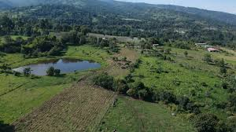

Cafe La Esperanza
Cafe La Esperanza
Aunque se encuentra técnicamente en el municipio vecino de Silvania (muy cerca de Fusagasugá), es un referente importante en la zona por su enfoque en cafés de especialidad y turismo experiencial. Ofrecen tours donde se explica el proceso del grano desde la planta hasta la taza, destacándose por sus altos estándares de calidad y su compromiso ambiental.